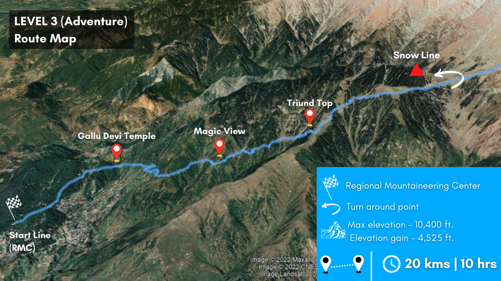

Indrahar Run Plan
B-race plan for Summit Run Indrahar 20K: a McLeodganj / RMC to Snow Line out-and-back with steep Himalayan climbing, rocky trail, altitude exposure, and meaningful descent damage risk. The goal is mountain durability without compromising the Border 50K build.

Race Read
Primary Goal
Finish controlled, confident, and structurally intact. This is a B race, not an all-out peak. The win is resuming Border-specific training within the following week.
Terrain
Expect steep uphill hiking, runnable but uneven trail, rocks, boulders, exposed sections, and technical downhill. Race reports describe the route as closer to trail hike than road race.
Altitude
The top is around 10,400 ft. Breathing and pacing will change above Triund/Snow Line altitude. Do not force sea-level effort or road-run cadence.
Route And Effort Model
| Section | Likely Feel | Execution |
|---|---|---|
| RMC / McLeodganj to Gallu Devi side | Early climbing, crowding, dark/low-light start if similar to prior editions. | Start under control. No racing in the first hour. Let people go. |
| Gallu Devi to Triund ridge | Steady climbing through forest and ridge trail. Hiking will be normal. | Power-hike steep grades, short-run only where the trail gives free speed. |
| Triund to Snow Line | Higher altitude, better views, rockier surface, breathing cost rising. | Keep steps deliberate. Protect ankles and avoid redlining for position. |
| Turnaround / Snow Line | Highest point of the 20K. Cooling risk if stopped too long. | Refill, eat, layer check, leave calmly. Do not linger unless weather or breathing demands it. |
| Descent to RMC | Most damaging part. Quads, ankles, and falls are the risk. | Fast feet, low ego. Walk technical rocks. Run smoother dirt. No all-out downhill. |
Strava Course And Pacing Read
A public 2025 race-day Strava activity from the same route shows why this should be treated as a mountain effort first and a running race second: 21.03 km, 2:41:57 moving time, 3:35:25 elapsed time, 7:42/km moving pace, and 1,686 m of Strava elevation gain. The average pace hides the real shape of the day.
Course Shape
- 0-3 km: already climbing, but still controlled terrain.
- 3-6 km: mixed runnable and steep trail; easy place to overcook.
- 6-11 km: the real race, with sustained climb, high gradient, and rising altitude cost.
- ~11 km: turnaround near 3,160 m / 10,350 ft.
- 11-21 km: steep technical descent; quad durability and foot placement matter.
Segment Benchmarks
- Galu to Triund: 5.83 km, +670 m, about 12:48/km.
- Triund to Snowline: 2.28 km, +324 m, about 16:12/km.
- Down Triund to Galu: 5.24 km, -666 m, about 8:46/km.
These splits imply the upper climb is power-hike dominant. Trying to force a road-running stride there is wasted effort.
| Race Section | Pacing Instruction |
|---|---|
| 0-3 km | Easy jog and hike mix. Stay very controlled and let the field settle. |
| 3-6 km | Settle into climb rhythm. No racing yet; cap surges and protect breathing. |
| 6-11 km | Power-hike hard, run only short runnable patches, and avoid redlining above Triund. |
| Turnaround | Reset, fuel, check layers and legs, then leave calmly. |
| 11-16 km | Controlled descent with quick feet. Do not brake aggressively on rocks. |
| 16-21 km | Open up only if quads, ankles, and footing are still good. |
Travel Plan
| Date | Plan | Training Intent |
|---|---|---|
| 30 Sep | Arrive in McLeodganj / Dharamshala. Acclimatization trip to 8,500-9,000 ft and back. | Move easily, test breathing, do not turn acclimatization into training. |
| 1 Oct | Rest. | Short walk only. Hydrate, eat normally, avoid unnecessary stairs and sightseeing fatigue. |
| 2 Oct | BIB and race-kit collection, gear check. | Finalize kit, calories, layers, shoes, poles if allowed, and race-morning logistics. |
| 3 Oct | Event day. | Controlled B-race effort. Finish with enough legs to recover into the Border block. |
| Departure | As planned. | Prefer sleep and easy walking after the race. Avoid stacking travel stress immediately after a hard descent if possible. |
Race Week Rules
Do
- Carry mandatory kit seriously: shell, headlamp, calories, hydration, phone, ID, and basic first aid.
- Use trekking poles if allowed and if you have practiced with them.
- Eat early: start fueling before the climb feels hard.
- Use short steps and hands-on-knees hiking on steep grades.
- Keep descents smooth, not aggressive.
Do Not
- Do not chase road-run pace or half-marathon psychology.
- Do not sprint the first climb to stay with a group.
- Do not bomb rocky downhill sections for time.
- Do not skip layers because it feels warm at the start.
- Do not ignore dizziness, nausea, unusual breathlessness, or coordination changes.
Altitude And Terrain Effects
The altitude is high enough to change breathing and pacing but not high enough to excuse poor execution. The main effect will be elevated effort on climbs, slower recovery after surges, and a higher cost for panic pacing. Terrain risk is just as important: uneven rocks and descents can create more damage than the climb itself.
Practical Pacing Rule
If breathing feels ragged for more than 2-3 minutes, switch to a deliberate hike. If footing needs attention, walk. If the trail is smooth and effort is controlled, run. The watch pace is secondary.
Training Priorities Before Indrahar
| Priority | Workout Bias | Why It Matters |
|---|---|---|
| Climbing durability | Incline treadmill hikes, hill repeats, step-ups, split squats. | The course is uphill effort first, running event second. |
| Downhill resilience | Controlled downhill strides, eccentric quad work, step-downs. | Descent damage can compromise the two weeks after the race. |
| Foot and ankle control | Single-leg balance, calf work, trail exposure, careful technical running. | Reports repeatedly mention rocks, boulders, slips, and ankle twists. |
| Altitude tolerance | Arrive early, take the 8,500-9,000 ft acclimatization trip easy, sleep well. | Fitness helps, but breathing control and calm pacing matter at Snow Line altitude. |
| Border protection | No massive taper, no all-out race, no reckless downhill. | Indrahar serves the Border build only if recovery stays manageable. |
Source Notes
- Zen Mountain Indrahar Summit Run page for the 20K Snow Line category, max altitude, and runner/trekker suitability.
- Townscript Summit Run Indrahar listing for the 20K Snow Line route language and double-ridge description.
- ITRA Summit Run Indrahar 2024 page for 19.26 km, elevation gain/loss, and 10-hour time limit reference.
- Running In India race report for Level 3 / 20K terrain notes, rocks/boulders, gear check, and safety briefing context.
- Milan Gupta's Indrahar race experience for route feel, early start, Snow Line timing, support, boulder/rock terrain, and altitude/breathing commentary.